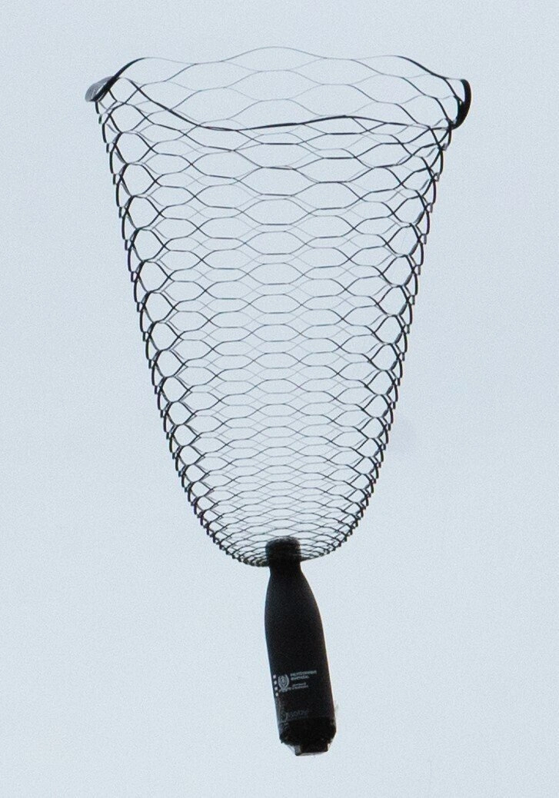
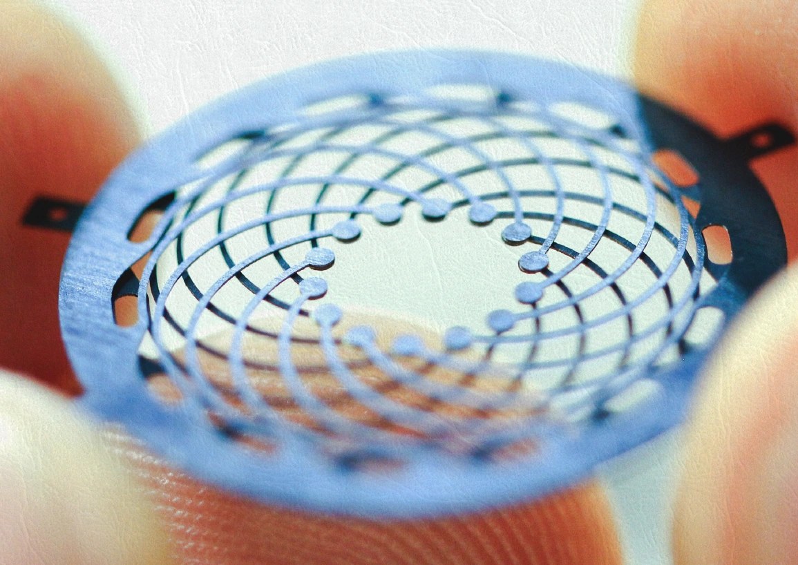

Prototype déployable par plis et découpes
Description du projet à venir.
Theme de recherche
Nous utilisons les plis de l’origami et les découpes du kirigami pour concevoir des structures qui passent d’une configuration compacte à une forme tridimensionnelle fonctionnelle. Le motif détermine les mouvements des panneaux et la façon dont ils s’enchaînent.
Nous cherchons quelles géométries favorisent une transition fluide, lesquelles se verrouillent en position et comment le matériau influe sur ces réponses. Les prototypes et les simulations permettent de comparer le mouvement prévu à celui observé sous charge.
Une structure déployable répond à des exigences différentes pendant le transport et en service. Une fois pliée, elle doit tenir dans un volume restreint. Après déploiement, elle peut devoir résister au vent, à la pression ou à d’autres charges.
Le choix de la géométrie aide à concilier ces exigences. Une séquence de pliage bien choisie peut guider le mouvement avec moins d’actionneurs et rendre la forme finale moins sensible aux perturbations.



Ces principes peuvent servir à concevoir des structures compactes pour le transport ou le spatial, ainsi que des surfaces qui adaptent leur forme aux charges qu’elles rencontrent.